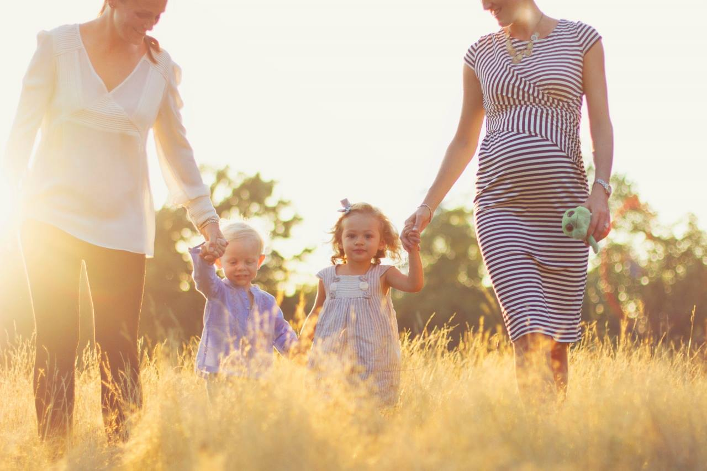

Family
London Family Photography Session
18 November 2013

Oh London, how lovely you are. I am so excited to embark on a journey as a family photographer in such an incredible place. As I explore I’ve been completely taken aback by the beauty of the city and I constantly find myself thinking; “this would be the perfect location for a family photography session!”.
Now insert [maternity photography], [couple's photography], [children's photography] into that last sentence and say it again. Ok so you get my point–this place is a wonderful place to be a family photographer. One of the most amazing things in my opinion is that London provides such an amazing variety of scenery to choose from–we have urban settings, wild grasses, manicured formal gardens, castle ruins, hidden garden squares, iconic London scenery.
It’s hard to believe that the photos posted from this family maternity photo session were taken in one of the biggest cities in the world! We chose Hyde park for this maternity shoot–I think the wild, overgrown grass meadows were the perfect juxtaposition to the organic, natural beauty radiating from this momma.
And as a bonus, her husband, adorable nephew and gorgeous sister made a surprise pop into the shoot and I couldn’t help snapping a few of them as well! Enjoy!!! xx
To book your London Family Photography session please email me at amy@fantonphotography.com I look forward to working with you!